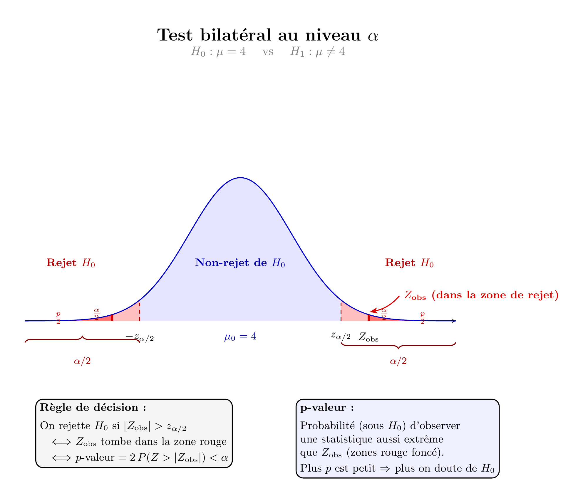
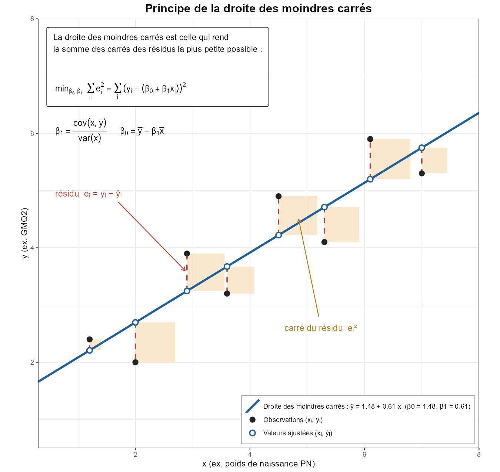

Les tests d’hypothèse sont très utilisés dans les sciences biologiques et humaines.
Revenons à l’exemple du poids des agneaux à la naissance. On veut tester statistiquement si le poids moyen est significativement différent de 4 kg.
étape 1 : On va supposer que la moyenne n’est pas significativement différente de 4 (hypothèse nulle \(H_0:\mu=4\)).
étape 2 : On prélève un échantillon de taille \(n\) et on calcule sa moyenne \(\bar X_n\). On connait la distribution sous \(H_0\) de \(Z=\sqrt{n}\times \frac{\bar X_n-4}{\hat\sigma}\), c’est une loi \(\mathcal N(0,1)\).
étape 3 : On calcule \(p.value=\mathbb P(|Z|>z_{obs})\) où \(z_{obs}\) est la valeur de \(Z\) calculée sur l’échantillon observé.
étape 4 : On rejette l’hypothèse \(H_0\) au risque \(\alpha\) lorsque \[p.value<\alpha\]

test d’hypothèse
Mise en oeuvre sur R
On reprend les données concernant les agneaux, on commence toujours par une analyse descriptive des données :
La mise en oeuvre du test se fait via la fonction t.test().
Voir le code
t.test(data,mu =4)
One Sample t-test
data: data
t = -0.88009, df = 65, p-value = 0.3821
alternative hypothesis: true mean is not equal to 4
95 percent confidence interval:
3.643355 4.138463
sample estimates:
mean of x
3.890909
Lecture du résultat :
La valeur de \(t\) correspond à la valeur de la statistique calculée sur les données observées. Remarque \(t=0\) correspond à la moyenne de l’écahntillon est égale à la valeur testée (ici \(\mu=4\)).
Le \(df\) (degree of freedom) est le degré de liberté. C’est le nombre d’informations indépendantes disponible pour estimer la statistique \(T=\frac{\bar X_n-\mu}{\hat\sigma}\). Ici c’est \(n-1\) car pour calculer \(\hat\sigma\) on a \(n-1\) valeurs indépendantes (la moyenne est calculée à partir des \(n\) valeurs observées).
La p-value est \(\mathbb P_{\mathcal H_0}(|T|>t)\). Elle vaut ici p-value= 0.3820535
ImportantConclusion du test
Conclusion statistique du test : Au risque de $5\%$, on ne peut pas rejeter l’hypothèse \(\mathcal H_0\) ($t(64)=-0.80,p=0.428$).
Conclusion : Le poids moyen à la naissance de la population d’agneau n’est pas significativement différente de 4 kg.
Test de comparaison de deux moyennes
Il s’agit du test de Student. Il repose sur des hypothèses concernant la forme de la distributions des données :
TipTest de Student
On considère une caractéristique \(X\) dont la distribution est connue sur deux poulations \(A,B\) :\[X_A\sim \mathcal N(\mu_A,\sigma_A), \quad X_B\sim \mathcal N(\mu_B,\sigma_B).\] On veut tester l’hypothèse il n’existe pas de différence significative entre les deux moyennes c’est à dire : \[\mathcal H_0:\mu_A=\mu_B, \quad versus \quad \mathcal H_1:\mu_A\not =\mu_B.\] On a deux cas :
(Student classique) les variance \(\sigma_A^2,\sigma^2_B\) sont inconnues mais supposées égales. On estime la variance commune \(s_p^2=\frac{n_As^2_A+n_Bs^2_B}{n_A+n_B-2}\) et on a \[T=\frac{\bar X_A-\bar X_B}{s_P\sqrt{\frac{1}{n_A}+\frac{1}{n_B}}}\sim t_{n_A+n_B-2}.\]
(Welch) les variance \(\sigma_A^2,\sigma^2_B\) sont inconnues et inégales. On estime chaque variance et on a \[T=\frac{\bar X_A-\bar X_B}{\sqrt{\frac{s^2_A}{n_A}+\frac{s^2_B}{n_B}}}\sim t_{\nu}.\] où \(\nu\) est le degré de liberté calculé en fonction de \(n_A,n_B\).
Dans les deux cas on a \(p.value=\mathbb P_{\mathcal H_0}(|T|>t_{obs})\)
Reprenons le fichier Agneaux :
NoteExemple
On veut savoir si il existe une différence statistique entre les poids moyens des agneaux selon le sexe. On va tester l’hypothèse \(H_0:\mu_F=\mu_M\).
Comme précédemment on commence par une analyse descriptive des données :
On peut alors faire les deux versions du test de Student
Voir le code
t.test(PN~Sexe, data=Agneaux,var.equal=T)
Two Sample t-test
data: PN by Sexe
t = -1.1746, df = 64, p-value = 0.2445
alternative hypothesis: true difference in means between group f and group m is not equal to 0
95 percent confidence interval:
-0.7855999 0.2038487
sample estimates:
mean in group f mean in group m
3.754286 4.045161
Voir le code
t.test(PN~Sexe, data=Agneaux)
Welch Two Sample t-test
data: PN by Sexe
t = -1.1679, df = 61.167, p-value = 0.2474
alternative hypothesis: true difference in means between group f and group m is not equal to 0
95 percent confidence interval:
-0.7888706 0.2071194
sample estimates:
mean in group f mean in group m
3.754286 4.045161
Les résultats sont proches (car ….).
On en déduit qu’au risque de 5% on ne peut pas rejeter l’hypothèse \(H_0\). Donc il n’existe pas de différence significative de poids moyen des agneaux selon le sexe.
NoteExercice
Télécharger et ouvrir le fichier Veaux. Ce fichier contient des caractéristiques physiques d’un veau (A,B,C) et de leur mère (BIM, HSP, LH, LB). On veut savoir si il existe un lien entre le fait que le veau soit né par césarienne et ses caractéristiques physiques ? de même avec les caractéristiques physiques de sa mère.
Tests de corrélation linéaire et droite de régression
On considère deux caractéristiques quantitatives \(X,Y\) définies sur une même population. On cherche à savoir si on peut prédire la valeur de \(Y\) en fonction de la valeur de \(X\), autrement dit si il existe un lien entre \(X\) et \(Y\).
Le modèle le plus simple pour répondre à cette question est le modèle linéaire c’est à dire \[f(X)=\beta_0+\beta_1 X,\] où \(\beta_0\) est l’ordonnée à l’origine (intercept) et \(\beta_1\) la pente (slope) qui correspond à l’inclinaison de la droite. Utiliser un modèle linéaire suppose que le lien entre \(X\) et \(Y\) est monotone c’est à dire une des deux situations suivantes :
Si \(X\) augmente alors \(Y\) augmente (\(\beta_1>0\))
Si \(X\) augmente alors \(Y\) diminue (\(\beta_1<0\))
Evidemment le modèle ne sera pas parfait on aura \(Y\simeq f(X)\), on va écrire \[Y=f(X)+e,\] où \(e\) sont les résidus du modèle.
On cherche la droite qui minimise le carré des résidus :

principe droite des moindres carrés
TipVariance, Covariance, coefficient de corélation
On va donner les versions empiriques de ces notions. Considérons un échantillon de \(n\) individus pour lesquels on connait les valeurs de \(X\) (\(x_1,...x_n\)) et de \(Y\) (\(y_1,...,y_n\)). On définit :
Les variances empiriques de \(X\) et de \(Y\) : \(\sigma_X^2=\frac1{n}\sum_{i=1}^n(x_i-\bar x)^2\) et \(\sigma_Y^2=\frac1{n}\sum_{i=1}^n(y_i-\bar y)^2\)
La covariance empirique de \(X,Y\) : \(\sigma_{X,Y}=\frac1{n}\sum_{i=1}^n(x_i-\bar x)(y_i-\bar y)\)
Le coeffcient de corrélation empirique de \(X,Y\) : \[r_{X,Y}=\frac{\sigma_{X,Y}}{\sigma_{X}\sigma_{Y}}, \quad \text{coefficient Bravais-Pearson.}\]
Il y a un lien étroit entre le coefficient de corrélation linéaire et la pente \(\beta_1\) de la droite de régression : \[r=0 \Longleftrightarrow \beta_1=0.\] On peut tester le lien entre les variables \(X,Y\) en utilisant l’un des tests suivant :
TipTest du lien linéaire entre deux variables quantitatives
Test de Bravais Pearson : on teste \(\mathcal H_0:r=0\) versus \(\mathcal H_1:r\not=0\). On utilise la statistique \[T=\frac{r\sqrt{n-2}}{\sqrt{1-r^2}}\sim t_{n-2},\] et on rejette \(\mathcal H_0\) au risque \(\alpha\) si \(p.value=P(|T|>t_{obs})<\alpha\).
Test de la pente : on teste \(\mathcal H_0:\beta_1=0\) versus \(\mathcal H_0:\beta_1\not=0\). On utilise la statistique \[T=\frac{\beta_1}{se_{\beta_1}}\sim t_{n-2},\]
où \(se_{ \beta_1}=\sqrt{\frac{\sigma^2}{\sigma_X^2}}\) et \(\sigma^2=\frac1{n-2}\sum_{i=1}^n e_i^2\).
Deux tests sont exactement équivalents en régression linéaire avec une seule variable \(X\).
NoteExemple
On veut tester si il existe un lien significatif entre les poids moyens des agneaux à la naissance et GMQ2 (Gain Moyen Quotidien) des agneaux. On va tester l’hypothèse \(H_0:r_{PN,GMQ2}=0\).
Voir le code
mod <-lm(GMQ2 ~ PN, data = Agneaux)summary(mod)
Call:
lm(formula = GMQ2 ~ PN, data = Agneaux)
Residuals:
Min 1Q Median 3Q Max
-242.841 -28.710 7.491 40.213 115.387
Coefficients:
Estimate Std. Error t value Pr(>|t|)
(Intercept) 35.809 31.468 1.138 0.259
PN 52.935 7.833 6.758 4.95e-09 ***
---
Signif. codes: 0 '***' 0.001 '**' 0.01 '*' 0.05 '.' 0.1 ' ' 1
Residual standard error: 63.6 on 64 degrees of freedom
Multiple R-squared: 0.4164, Adjusted R-squared: 0.4073
F-statistic: 45.66 on 1 and 64 DF, p-value: 4.946e-09
Voir le code
cor.test(Agneaux$PN,Agneaux$GMQ2)
Pearson's product-moment correlation
data: Agneaux$PN and Agneaux$GMQ2
t = 6.7575, df = 64, p-value = 4.946e-09
alternative hypothesis: true correlation is not equal to 0
95 percent confidence interval:
0.4778971 0.7674607
sample estimates:
cor
0.6452911